Wprowadzenie do programu KiCad
Podrêczny i zwiêz³y przewodnik.
Spis tre¶ci
- Wprowadzenie do programu KiCad
- Schemat postêpowania
- Rysowanie schematów
- Trasowanie po³±czeñ w obwodach drukowanych
- Tworzenie symboli w programie KiCad
- Tworzenie symboli za pomoc±
quicklib - Tworzenie footprint-ów
- Uwagi na temat przenoszenia plików projektów wykonanych w programie KiCad
- Renumeracja elementów w programie KiCad
- Wiêcej na temat dokumentacji do programu KiCad
Prawa autorskie
Copyright © 2010-2014. Ten dokument jest chroniony prawem autorskim. Lista autorów znajduje siê poni¿ej.
Mo¿esz go rozpowszechniaæ oraz modyfikowaæ na zasadach okre¶lonych w GNU General Public License (http://www.gnu.org/licenses/gpl.html), wersja 3 lub pó¼niejsza, albo okre¶lonych w Creative Commons Attribution License (http://creativecommons.org/licenses/by/3.0/), wersja 3.0 lub pó¼niejsza.
Wszystkie znaki towarowe u¿yte w tym dokumencie nale¿± do ich w³a¶cicieli.
Autorzy
David Jahshan, Phil Hutchinson, Fabrizio Tappero, Christina Jarron, Kerusey Karyu.
Kontakt
Proszê kierowaæ wszelkie komentarze lub sugestie dotycz±ce tego dokumentu do:
Fabrizio Tappero: fabrizio.tappero(_@_)gmail.com, David Jahshan: kicad(_@_)iridec.com.au lub Kerusey Karyu: keruseykaryu(_@_)o2.pl
Alternatywnie, prze¶lij komentarze lub twoj± now± wersjê do:
http://kicad.sourceforge.net/wiki/Main_Page
https://launchpad.net/~kicad-developers
Wersja
19 Pa¼dziernika 2014
Informacja dla u¿ytkowników komputerów Apple Macintosh
Wsparcie programu KiCad dla systemu operacyjnego Apple OS X jest w zaawansowanej fazie eksperymentalnej.
1. Wprowadzenie do programu KiCad
KiCad EDA Suite to oprogramowanie narzêdziowe przeznaczone do tworzenia schematów elektronicznych oraz obwodów drukowanych PCB. Pod jednym prostym interfejsem KiCad ³±czy elegancki zespó³ nastêpuj±cych, samodzielnych programów:
| KiCad | zarz±dza projektem |
| Eeschema | edytor schematów |
| CvPcb | wybiera modu³y |
| Pcbnew | edytor do trasowania obwodów drukowanych |
| GerbView | przegl±darka plików Gerber |
| Bitmap2Component | tworzenie elementów z grafik |
| PCB calculator | narzêdzie dodatkowe |
W czasie gdy powstawa³ ten dokument, KiCad mo¿na by³o uznaæ za wystarczaj±co dojrza³e oprogramowanie, by wykorzystaæ go do tworzenia i utrzymywania z³o¿onych projektów obwodów drukowanych. KiCad nie stwarza ¿adnego ograniczenia co do rozmiaru PCB i mo¿e z ³atwo¶ci± obs³ugiwaæ do 32 warstw miedzi, i do 18 warstw technicznych. KiCad mo¿e tworzyæ te¿ wszystkie pliki niezbêdne do tworzenia obwodów drukowanych: pliki Gerber dla foto-ploterów, pliki wierceñ, pliki z lokalizacj± elementów i wiele wiêcej.
Bêd±c oprogramowaniem otwartym (na licencji GPL), KiCad stanowi idealne narzêdzie dla projektów zorientowanych w kierunku urz±dzeñ o charakterze Open-Source.
W sieci Internet, mo¿na znale¼æ KiCad-a pod tymi adresami:
http://iut-tice.ujf-grenoble.fr/kicad/index.html
http://www.gipsa-lab.inpg.fr/realise_au_lis/kicad/index.html
http://kicad.sourceforge.net/wiki/Main_Page
Pobieranie i instalowanie programu KiCad
KiCad uruchamia siê w systemach Linux, Apple OS X oraz Windows. Mo¿na pobraæ kopiê KiCad-a z:
http://kicad.sourceforge.net/wiki/Main_Page
Instrukcje instalacji s± dostêpne na stronie programu KiCad w: Infos/Install. Niezale¿nie któr± z metod instalacji wybierzesz, zawsze korzystaj z najnowszej wersji programu KiCad.
W systemie Linux
W systemie Linux, najprostsz± metod± instalacji KiCad-a jest skorzystanie z Aptitude. Wpisz w konsoli nastêpuj±ce polecenia:
sudo add-apt-repository ppa:paxer/ppa
sudo aptitude update && sudo aptitude safe-upgrade
sudo aptitude install kicad kicad-doc-en
W czasie pisania tego dokumentu, standardowe repozytorium apt-get z Ubuntu zawiera³o wersjê programu KiCad, która by³a aktualna oko³o rok temu.
Alternatywnie, mo¿esz pobraæ i zainstalowaæ wersjê pre-kompilowan± KiCad-a lub bezpo¶rednio pobraæ kod ¼ród³owy, skompilowaæ go oraz zainstalowaæ z niego KiCad-a.
W systemie Apple OS X
W czasie pisania tego dokumentu, najlepszym sposobem instalacji KiCad-a w systemie Apple OS X by³o pobranie prekompilowanego pakietu binarnego spod:
http://kicad.sourceforge.net/wiki/Downloads
2. Schemat postêpowania
Pomimo podobieñstw do innego oprogramowania narzêdziowego do tworzenia PCB, KiCad charakteryzuje siê ciekawym schematem postêpowania, w którym komponenty na schemacie i footprinty s± w³a¶ciwie dwoma odrêbnymi podmiotami. Czêsto jest to przedmiotem dyskusji na internetowych forach.
Schemat postêpowania w przypadku KiCad-a sk³ada siê z dwóch g³ównych zadañ: tworzenie schematu i uk³adanie zawarto¶ci p³ytki. Obie biblioteki: komponentów oraz footprintów s± niezbêdne dla obu tych zadañ. KiCad ma do¶æ sporo. Tylko w przypadku, gdy nie s± one wystarczaj±ce, KiCad oferuje równie¿ narzêdzia niezbêdne do tworzenia nowych.
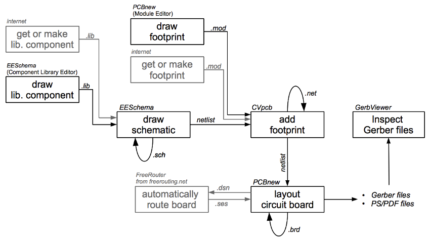
Na rysunku powy¿ej, bloki w kolorze szarym, oznaczaj± narzêdzia do rysowania komponentów i footprintów, które nie s± bezpo¶rednio zwi±zane z programem KiCad. Jednak¿e, poniewa¿ wszystkie one posiadaj± bardzo cenne opcje, nie zapomnij sprawdziæ ich funkcjonalno¶ci. Mo¿na je znale¼æ pod tym adresem:
http://kicad.rohrbacher.net/quicklib.php
Na tej stronie, znajdziesz przyk³ad narzêdzia, które pozwoli ci szybko tworzyæ biblioteki komponentów dla programu KiCad. Aby uzyskaæ wiêcej informacji na temat quicklib, przejd¼ do sekcji nazwanej: Tworzenie symboli za pomoc± quicklib znajduj±cej siê w tym dokumencie.
Renumeracja elementów oraz numeracja wsteczna
Gdy schemat zosta³ ju¿ w pe³ni opracowany, nastêpnym krokiem jest przeniesienie go do PCB postêpuj±c zgodnie z przedstawionym schematem postêpowania. Kiedy proces trasowania ¶cie¿ek zosta³ czê¶ciowo b±d¼ ca³kowicie wykonany, byæ mo¿e trzeba bêdzie dodaæ dodatkowe komponenty lub sieci, przemie¶ciæ niektóre elementy albo wykonaæ jeszcze inne zmiany. Mo¿na to zrobiæ na dwa sposoby: z wykorzystaniem narzêdzi do renumeracji elementów i numeracji wstecznej.
Numeracja wsteczna to proces wysy³ania zmian w obwodzie drukowanym z powrotem do odpowiadaj±cemu mu schematu. Niektórzy nie uwa¿aj± by ta szczególna cecha programu by³a szczególnie u¿yteczna.
Renumeracja elementów to proces wysy³ania zmian w schemacie do odpowiedniego PCB. Jest zasadnicza cecha, poniewa¿ tak naprawdê nie chcieliby¶my ponownie zrobiæ ca³ego uk³adu PCB za ka¿dym razem, kiedy nast±pi zmiana w schemacie. Renumeracja elementów jest omówiona w rozdziale zatytu³owanym Renumeracja elementów w programie KiCad.
3. Rysowanie schematów
W tej sekcji nauczymy siê rysowaæ schematy za pomoc± narzêdzi zawartych w KiCad EDA.
W systemie Windows uruchom kicad.exe. W systemie Linux wpisz kicad w oknie konsoli. Znajdziesz siê wtedy w g³ównym oknie zarz±dcy projektu programu KiCad. Z tego miejsca masz dostêp do piêciu samodzielnych narzêdzi: Eeschema, CvPcb, Pcbnew, GerbView, Bitmap2Component oraz PCB Calculator. Spójrz ponownie na schemat postêpowania by rozeznaæ do czego poszczególne narzêdzia s± u¿ywane.
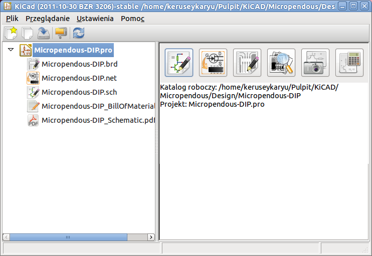
Stwórz nowy projekt: Plik → Nowy. Kliknij na przycisk Nowy folder, oraz nadaj nowemu folderowi tak± sam± nazwê jak± bêdzie mia³ twój projekt: tute1. Otwórz nowo stworzony folder dwukrotnie klikaj±c na niego. Tutaj bêd± zapisywane wszystkie pliki projektu. Nazwij plik projektu równie¿ jako tute1. Plikowi projektu automatycznie zostanie nadane rozszerzenie .pro.
Rozpocznijmy tworzenie schematu. Uruchom program do edycji schematów Eeschema, . Jest to pierwszy klawisz licz±c od lewej. Je¶li ujrzysz komunikat o b³êdzie, który bêdzie wskazywa³ na brak pliku, zignoruj go oraz kliknij OK.
Pierwsz± rzecz± jak± musimy zrobiæ to zapisanie ca³ego projektu schematu: Plik → Zapisz ca³y projekt schematu. Kliknij w ikonê Ustawienia strony na górnym pasku narzêdzi. Ustaw Rozmiar Strony na A4 oraz wpisz w polu Tytu³ Tute 1. Najprawdopodobniej zauwa¿y³e¶, ¿e mo¿na okre¶liæ równie¿ wiêcej informacji, na razie jednak to wystarczy. Kliknij OK. Informacja ta zostanie przeniesiona na arkusz schematu do ramki znajduj±cej siê w prawym dolnym naro¿niku. Mo¿esz u¿yæ rolki myszy by go powiêkszyæ.
Teraz mo¿emy ju¿ wstawiæ nasz pierwszy komponent. Kliknij w ikonê Dodaj element na prawym pasku narzêdzi. To samo mo¿esz osi±gn±æ korzystaj±c z klawisza skrótu polecenia Dodaj element: klawisza A.
UWAGA: Mo¿esz podejrzeæ aktualn± listê klawiszy skrótów naciskaj±c klawisz ?. Kliknij w ¶rodku arkusza schematu by umie¶ciæ pierwszy komponent. Pojawi siê okno Wybór symbolu. Kliknij na klawisz Wy¶wietl wszystkie. Pojawi siê okno Wybór biblioteki. Tutaj znajdziesz listê wszystkich dostêpnych bibliotek.
Wybierz bibliotekê device klikaj±c podwójnie na jej nazwê. Pojawi siê okno Wybierz element. Tutaj masz listê komponentów nale¿±cych do biblioteki device, która jest jedn± z podstawowych i najczê¶ciej u¿ywanych bibliotek.
Przewiñ listê w dó³ i kliknij na rezystor R. Spowoduje to zamkniêcie okna Wybierz element i zostaniesz znów przeniesiony do twojego arkusza schematu.
Wstaw komponent do schematu klikaj±c w miejscu gdzie chcia³by¶ go umie¶ciæ. Kliknij na lupê by powiêkszyæ widoczny obszar wokó³ tego komponentu. Alternatywnie, mo¿esz u¿yæ kó³ka myszy by powiêkszyæ lub pomniejszyæ widoczny obszar. Niestety funkcja panoramowania nie zosta³a jeszcze zaimplementowana.
Przesuñ kursor myszy nad komponent R oraz naci¶nij klawisz R. Zauwa¿, w jaki sposób komponent zosta³ obrócony.
UWAGA: Nie musisz klikaæ na komponent by go obróciæ.
Kliknij mniej wiêcej w ¶rodku komponentu oraz wybierz polecenie Edytuj element → Warto¶æ. Mo¿esz osi±gn±æ ten sam rezultat przesuwaj±c kursor myszy nad komponent, a nastêpnie nacisn±æ klawisz V. Alternatywnie, klawisz E przeniesie ciê do bardziej zaawansowanego okna Edycja elementu. Zauwa¿, ¿e z pomoc± prawego klawisza myszy otwarte menu podrêczne wskazuje na mo¿liwe klawisze skrótów wywo³uj±ce poszczególne akcje.
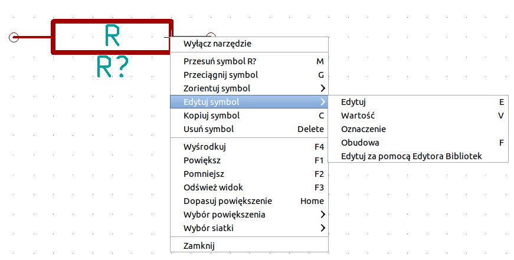
Pojawi siê okno Edytuj pole Warto¶æ. Zamieñ bie¿±c± warto¶æ R na 1k. Kliknij OK.
UWAGA: Nie zmieniaj pola Odniesienie (R?), zrobimy to pó¼niej z pomoc± automatu. Warto¶æ wewn±trz rezystora od teraz powinna wynosiæ 1k.
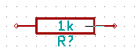
By umie¶ciæ nastêpny rezystor, po prostu kliknij w miejscu gdzie chcesz go umie¶ciæ. Ponownie pojawi siê okno Wybór symbolu.
Rezystor jaki wybra³e¶ poprzednim razem teraz jest ju¿ na twojej li¶cie z histori± wyboru jako R. Kliknij OK i umie¶æ komponent.
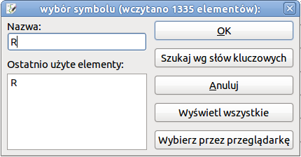
W przypadku gdy pope³nisz b³±d i bêdziesz chcia³ skasowaæ komponent, kliknij prawym klawiszem na komponencie oraz kliknij Usuñ symbol. To spowoduje usuniêcie komponent ze schematu. Alternatywnie, mo¿esz najechaæ kursorem na komponent który chcesz usun±æ oraz nacisn±æ klawisz Del.
UWAGA: Mo¿esz zmieniæ nazwê dowolnego z domy¶lnych klawiszy skrótów wybieraj±c polecenie Ustawienia → Skróty klawiszowe. Nie zapomnij jednak zapisaæ nowych ustawieñ za pomoc± Ustawienia → Zapisz ustawienia.
Mo¿esz równie¿ powieliæ komponent znajduj±cy siê ju¿ na twoim arkuszu, przez najechanie na niego kursorem i wciskaj±c klawisz C. Kliknij teraz gdzie chcia³by¶ umie¶ciæ nowy, zduplikowany komponent.
Kliknij prawym klawiszem na drugi rezystor. Wybierz Przeci±gnij symbol. Przenie¶ komponent i kliknij lewym klawiszem by go upu¶ciæ. Tak± sam± funkcjonalno¶æ mo¿esz uzyskaæ naje¿d¿aj±c na komponent i naciskaj±c klawisz G. U¿yj klawisza R by obróciæ komponent. Klawisz X oraz klawisz Y pozwalaj± na przerzucanie elementu w pionie lub w poziomie. UWAGA: Prawo-klik → Przesuñ symbol (odpowiednik klawisza M) jest równie¿ warto¶ciow± opcj± przeznaczon± do przesuwania czegokolwiek wokó³, jednak lepiej jest u¿ywaæ jej tylko dla etykiet komponentów oraz komponentów maj±cych byæ dopiero co po³±czonych. Zobaczymy pó¼niej dlaczego jest to takie wa¿ne.
Dokonaj edycji drugiego rezystora naje¿d¿aj±c na niego i wciskaj±c klawisz V. Zamieñ R na 100. Mo¿esz usun±æ dowoln± edycjê jak± wykona³e¶ za pomoc± klawisza Ctrl+Z.
Zmieñ gêsto¶æ siatki. Mo¿e ju¿ zauwa¿y³e¶, ¿e wszystkie komponenty na schemacie ustawiaj± siê wed³ug wielkiej rozpiêtej siatki. Mo¿esz bardzo ³atwo zmieniæ gêsto¶æ siatki klikaj±c Prawo-klik → Wybór siatki. Zasadniczo, rekomendowane jest u¿ywanie siatki o rozmiarze 25.0 milsów dla schematów.
Powtórz kroki z dodawaniem komponentów, jednak teraz wybierz bibliotekê microcontrollers zamiast biblioteki device i we¼ komponent PIC12C508A zamiast komponentu R.
Najed¼ mysz± na mikrokontroler. Naci¶nij klawisz Y lub klawisz X na klawiaturze. Zauwa¿ w jaki sposób komponent zostanie przerzucany w osi X lub Y. Naciskaj klawisze ponownie by wróciæ do jego oryginalnego po³o¿enia.
Powtórz kroki z dodawaniem komponentów, tym razem wybieraj±c bibliotekê device a z niej komponent LED.
U³ó¿ komponenty na twoim schemacie tak jak pokazano poni¿ej.
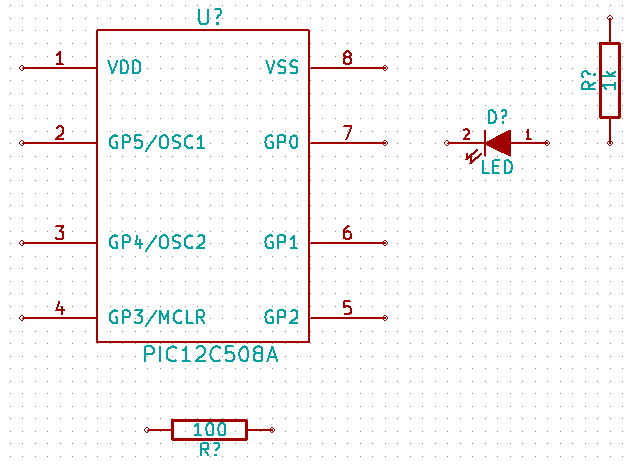
W tej chwili musimy stworzyæ nowy komponent MYCONN3 dla naszego trójpinowego z³±cza. Mo¿esz przeskoczyæ do rozdzia³u zatytu³owanego Tworzenie symboli w programie KiCad by nauczyæ siê jak utworzyæ ten komponent od zera i wróciæ tu by kontynuowaæ tworzenie p³ytki.
W tej chwili mo¿esz ju¿ wstawiæ ¶wie¿o utworzony komponent. Naci¶nij klawisz A i wybierz Wy¶wietl wszystkie. Wybierz bibliotekê myLib oraz pobierz komponent MYCONN3.
Pod etykiet± MYCONN3 pojawi siê identyfikator komponentu J?. Je¶li chcesz zmieniæ jego po³o¿enie, kliknij prawym klawiszem na J? oraz kliknij w Przesuñ pole (odpowiednik klawisza M). Mo¿e byæ równie¿ pomocne przybli¿enie widoku przed/podczas wykonywania tego kroku. Zmieñ po³o¿enie J? tak by tekst znalaz³ siê pod komponentem tak jak na obrazku. Etykiety mog± byæ przesuwane wokó³, tyle razy ile zechcesz.
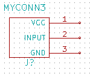
Nadszed³ czas by umie¶ciæ na schemacie symbole zasilania. Kliknij w ikonê Dodaj port zasilania na prawym panelu narzêdziowym. Alternatywnie, naci¶nij klawisz A i wybierz bibliotekê power. W oknie wyboru komponentów, kliknij na przycisk Wy¶wietl wszystkie. Przewiñ w dó³ oraz wybierz VCC w oknie Wybierz symbol. Kliknij OK.
Kliknij w okolicy górnego pinu rezystora 1k by umie¶ciæ tam element VCC. Kliknij w okolicy wyprowadzenia 'VDD' mikrokontrolera. W polu Ostatnio u¿yte elementy wybierz VCC i umie¶æ go w okolicy wyprowadzenia VDD. Powtórz ten proces ponownie i wstaw element VCC powy¿ej wyprowadzenia VCC komponentu MYCONN3.
Powtórz kroki z dodawaniem komponentów, ale tym razem wybierz element GND. Umie¶æ element GND pod wyprowadzeniem GND komponentu MYCONN3. Umie¶æ inny element GND na prawo od wyprowadzenia VSS mikrokontrolera. Twój schemat powinien teraz wygl±daæ mniej wiêcej tak:
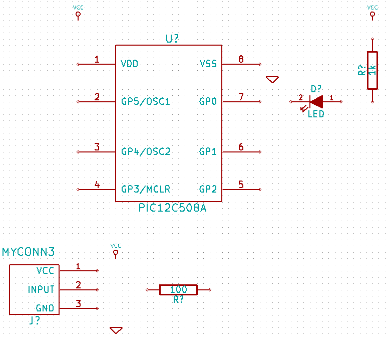
Nastêpnym krokiem bêdzie ³±czenie naszych komponentów. Kliknij na ikonê Dodaj po³±czenie na prawym panelu.
UWAGA: Nie wybierz przypadkiem polecenia Dodaj magistralê, które wystêpuje bezpo¶rednio pod t± ikon±, ale ma inny kolor i szeroko¶æ. Rozdzia³ Magistrale w programie KiCad wyja¶ni pó¼niej jak u¿ywaæ magistral.
Kliknij na ma³e kó³eczko na koñcu wyprowadzenia numer 7 mikrokontrolera oraz kliknij na to samo kó³eczko na koñcu wyprowadzenia numer 2 diody LED. Mo¿esz przybli¿yæ widok podczas wstawiania tego po³±czenia.
UWAGA: Je¶li chcesz przesun±æ po³±czone elementy, wa¿ne jest by do tego celu u¿yæ klawisza G (z³ap i przeci±gnij) a nie klawisza M (przesuñ). U¿ycie opcji Przeci±gnij symbol zachowa po³±czenia przesuwanego elementu. Je¶li zapomnia³e¶ ju¿ jak przesuwaæ elementy spójrz jeszcze raz na krok numer 24.
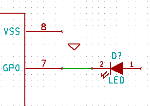
Powtórz ten proces oraz po³±cz wszystkie inne komponenty tak jak pokazano poni¿ej. By przerwaæ ³±czenie po prostu kliknij dwukrotnie. Gdy ³±czysz symbole VCC i GND, po³±czenie powinno dotkn±æ dolnej czê¶ci symbolu VCC oraz ¶rodka na górze w symbolu GND. Zobacz poni¿szy obrazek.
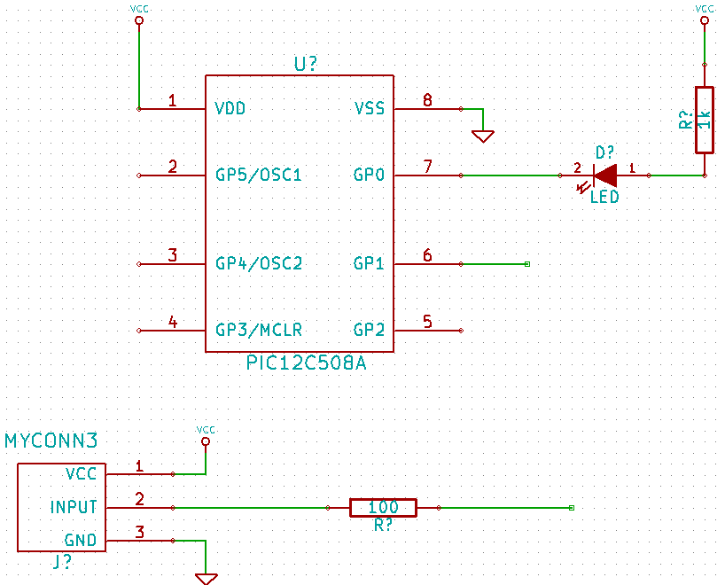
Poznamy teraz alternatywny sposób tworzenia po³±czeñ z u¿yciem etykiet. Wybierz narzêdzie do stawiania etykiet Dodaj nazwê sieci (lokalna) klikaj±c w ikonê na prawym pasku narzêdzi. Mo¿esz tak¿e u¿yæ klawisza L.
Kliknij w ¶rodku po³±czenia biegn±cego z wyprowadzenia numer 6 mikrokontrolera. Nazwij t± etykietê INPUT.
Postêpuj zgodnie z t± procedur± oraz wstaw inn± etykietê na linii na prawo od rezystora 100R. Nazwij j± równie¿ INPUT. Dwie etykiety, posiadaj±ce tak± sam± nazwê, tworz± niewidoczne po³±czenie pomiêdzy wyprowadzeniem numer 6 procesora PIC a rezystorem 100R. Jest to wygodna technika ³±czenia w skomplikowanych projektach, gdzie rysowanie po³±czeñ jako oddzielnych linii spowodowa³oby, ¿e schemat sta³by siê nieczytelny. By wstawiæ etykietê nie potrzebujesz rysowaæ czê¶ci po³±czenia, mo¿esz po prostu dopi±æ etykietê do wyprowadzenia.
Etykiety mog± byæ tak¿e u¿yte do prostego oznaczania po³±czeñ w celach informacyjnych. Umie¶æ etykietê na wyprowadzeniu numer 7 procesora PIC. Wpisz nazwê uCtoLED. Nazwij po³±czenie pomiêdzy rezystorem a diod± LED jako LEDtoR. Nazwij po³±czenie pomiêdzy MYCONN3 a rezystorem jako INPUTtoR.
Nie musisz dodawaæ etykiet do sieci VCC oraz GND, poniewa¿ ich etykiety s± tworzone domy¶lnie z nazw portów zasilania, do których s± one po³±czone.
Poni¿ej mo¿esz zobaczyæ jak powinien wygl±daæ koñcowy rezultat.
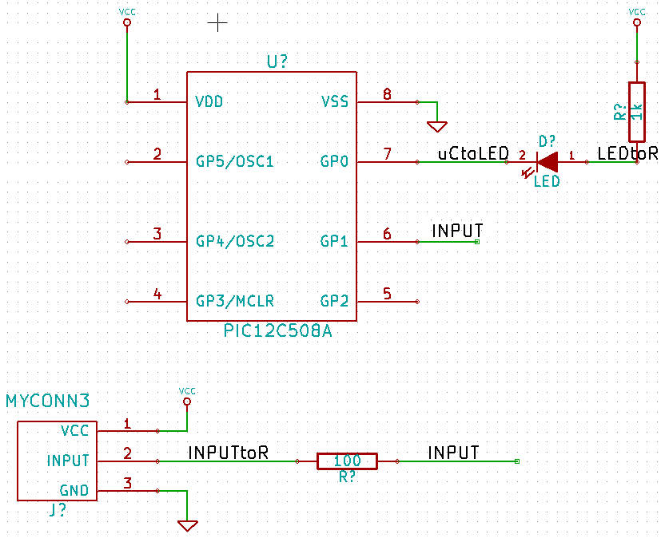
Zajmijmy siê teraz wyprowadzeniami niepo³±czonymi. Ka¿de z wyprowadzeñ albo po³±czeñ, które nie s± z niczym po³±czone, generuje ostrze¿enie podczas testu poprawno¶ci projektu. By zapobiec tym ostrze¿eniom mo¿esz poinstruowaæ program, ¿e jest to celowe dzia³anie i oflagowaæ te elementy jako niepo³±czone.
Kliknij na ikonê Dodaj flagê "Nie po³±czone" na prawym pasku narzêdzi. Kliknij na kó³eczka przy pinach 2, 3, 4 oraz 5. Pojawi siê znak X co oznacza, ¿e brak po³±czenia jest zamierzony.
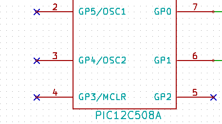
Niektóre z komponentów maj± wyprowadzenia zasilania, które s± niewidoczne. Mo¿esz sprawiæ by by³y widoczne klikaj±c na ikonê Poka¿ ukryte piny na lewym pasku narzêdzi. Ukryte piny zasilania zostaj± automatycznie po³±czone do w³a¶ciwych sieci VCC oraz GND. Mówi±c ogólnie, powiniene¶ równie¿ spróbowaæ nie tworzyæ ukrytych wyprowadzeñ zasilania.
Teraz wymagane bêdzie dodanie flag POWER FLAG by okre¶liæ, ¿e zasilanie bêdzie jednak dostarczone gdzie¶ z zewn±trz. Wci¶nij klawisz A, wybierz Wy¶wietl wszystkie, kliknij dwukrotnie na bibliotekê power oraz wyszukaj symbol PWR_FLAG. Wstaw dwa takie symbole. Po³±cz jeden z GND, a drugi z VCC, tak jak pokazano ni¿ej.
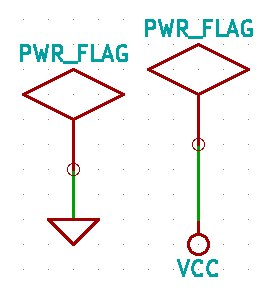
UWAGA: Pozwoli to na unikniêcie klasycznego ostrze¿enia przy sprawdzaniu schematu:
Ostrze¿enie Wyprowadzenie power_in nie jest sterowany (Sieæ xx)
Czasem dobrze jest dodaæ parê komentarzy na schemacie. By dodaæ komentarz u¿yj polecenia Dodaj tekst-komentarz (grafika), ikona tego narzêdzia znajduje siê na prawym pasku narzêdzi.
Ka¿dy z komponentów musi posiadaæ unikalny identyfikator. Rzeczywi¶cie, wiele z naszych komponentów dalej jest nazwanych R? lub J?. Nadawanie identyfikatorów mo¿e byæ wykonane automatycznie klikaj±c w ikonê Numeruj elementy na schemacie .
W oknie Numeruj schemat, wybierz U¿yj ca³ego schematu oraz kliknij na przycisk Numeruj. Kliknij OK by potwierdziæ wyskakuj±c± informacjê oraz kliknij na Zamknij. Zauwa¿, ¿e wszystkie znaki ? zosta³y zamienione na liczby. Ka¿dy identyfikator jest teraz unikalny. W naszym przyk³adzie elementy zosta³y nazwane R1, R2, U1, D1 i J1.
Mo¿emy teraz sprawdziæ nasz schemat czy nie ma w nim podstawowych b³êdów. Kliknij w ikonê Kontrola regu³ projektowych . Nastêpnie kliknij na przycisk Test ERC. Raport poinformuje ciê o wszystkich b³êdach lub ostrze¿eniach, takich jak na przyk³ad niepo³±czone wyprowadzenia. Powiniene¶ nie mieæ ¿adnych b³êdów lub ostrze¿eñ. W przypadku b³êdów lub ostrze¿eñ, na schemacie pojawia siê ma³a zielona lub niebieska strza³ka w miejscu gdzie zosta³ wykryty b³±d lub ostrze¿enie. Zaznacz Utwórz plik raportu i wci¶nij klawisz Test ERC ponownie by otrzymaæ wiêcej informacji o b³êdach.
Schemat jest ju¿ skoñczony. Mo¿emy teraz stworzyæ plik z list± sieci do którego dodamy informacje o footprintach dla ka¿dego z komponentów. Kliknij w ikonê Generowanie listy sieci na górnym pasku narzêdzi. Kliknij na Lista sieci a nastêpnie kliknij na Zapisz. Zapisz listê pod domy¶ln± nazw±.
Mo¿esz teraz opu¶ciæ edytor schematów. Z mened¿era, kliknij na ikonê Uruchom CvPcb na górnym panelu. Je¶li otrzymasz informacjê o nieistniej±cym pliku, zignoruj j± i kliknij na OK.
CvPcb pozwoli ci na po³±czenie wszystkich komponentów na schemacie z modu³ami w bibliotekach programu KiCad. Panel na lewej stronie pokazuje wszystkie komponenty u¿ywane na twoim schemacie. Wybierz zatem D1. Na prawym panelu masz listê wszystkich dostêpnych modu³ów, przewiñ go w dó³ szukaj±c LEDV i kliknij dwukrotnie na niej jak znajdziesz.
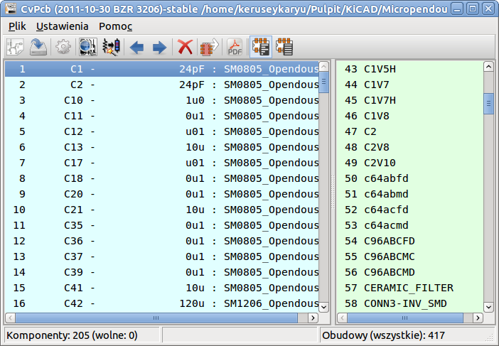
Mo¿liwe jest, ¿e panel na prawej stronie bêdzie wy¶wietla³ tylko pewn± podgrupê dostêpnych modu³ów. Jest to spowodowane tym, ¿e KiCad bêdzie siê stara³ podpowiedzieæ jakie modu³y s± w³a¶ciwe dla danego komponentu. Kliknij na ikonê by wy³±czyæ ten filtr.
Dla J1 wybierz modu³ 3PIN_6mm. Dla R1 oraz R2 wybierz modu³ R1. A dla U1 wybierz DIP-8_300.
Je¶li jeste¶ zainteresowany tym, by wiedzieæ jak wygl±da modu³ jaki wybierasz, masz dwie mo¿liwo¶ci. Mo¿esz klikn±æ na ikonê Poka¿ zaznaczon± obudowê by podgl±dn±æ bie¿±cy modu³ wskazywany na prawej li¶cie. Alternatywnie, kliknij na ikonê Poka¿ listê obudów (dokumentacja) a otworzysz wielostronicowy dokument PDF z wszystkimi dostêpnymi modu³ami. Mo¿esz go wydrukowaæ oraz sprawdziæ czy wymiary modu³ów pasuj± do twoich elementów.
Skoñczone. Mo¿esz teraz uaktualniæ twoj± listê sieci o informacjê o przypisanych modu³ach. Kliknij na Plik → Zapisz jako. Domy¶lna nazwa pliku tute1.net bêdzie dobra, kliknij Zapisz. Mo¿esz te¿ u¿yæ ikony . Twoja lista sieci zosta³a uaktualniona o informacje o modu³ach. Zauwa¿, ¿e je¶li pomin±³e¶ modu³ dla jakiego¶ z elementów, pewnie bêdziesz musia³ stworzyæ swój w³asny modu³. To zostanie wyja¶nione pó¼niej w jednym z dalszych rozdzia³ów.
Mo¿esz teraz zamkn±æ CvPcb oraz wróciæ z powrotem do edytora Eeschema. Zapisz projekt klikaj±c na Plik → Zapisz ca³y projekt schematu. Zamknij edytor schematów.
Prze³±cz siê na menad¿era projektu.
Plik z list± sieci okre¶la wszystkie komponenty oraz ich poszczególne po³±czenia z innymi komponentami. Lista sieci to w tej chwili zwyk³y tekst, który mo¿esz ³atwo podgl±daæ, edytowaæ lub drukowaæ.
UWAGA: Pliki biblioteczne (*.lib) to tak¿e pliki tekstowe, które równie¿ mo¿na ³atwo edytowaæ jak i wydrukowaæ.
Aby stworzyæ listê materia³ow±, id¼ do edytora schematów Eeschema i kliknij na ikonê Generuj listê materia³ów i/lub referencje na górnym pasku narzêdzi.
Kliknij na OK a nastêpnie na Zapisz. Mo¿esz podejrzeæ listê materia³ow± za pomoc± dowolnego edytora tekstu.
Jeste¶ ju¿ gotów by przej¶æ do czê¶ci po¶wiêconej tworzeniu p³ytek PCB, która znajduje siê w nastêpnej sekcji. Jednak¿e, przedtem spójrzmy szybko na mo¿liwo¶ci jakie daj± magistrale w ³±czeniu wyprowadzeñ.
Magistrale w programie KiCad
Czasami zachodzi potrzeba pod³±czenia kilku kolejnych wyprowadzeñ komponentu A z kolejnymi wyprowadzeniami komponentu B. W tym przypadku masz dwie opcje: metoda etykietowania, któr± ju¿ poznali¶my lub u¿ycie po³±czeñ w formie magistrali. Zobaczmy jak je zrobiæ.
Przypu¶æmy, ¿e masz trzy czteropinowe z³±cza, które chcesz po³±czyæ razem pin do pinu. U¿yj mo¿liwo¶ci dodawania etykiet (wci¶nij klawisz L) by dodaæ etykietê na wyprowadzeniu numer 4 komponentu P4. Nazwij t± etykietê a1. Teraz wci¶nij klawisz Insert by ponowiæ automatycznie t± sam± akcjê na pinie poni¿ej (PIN 3). Zauwa¿, ¿e etykieta zosta³a automatycznie przemianowana na a2.
Naci¶nij klawisz Insert jeszcze dwukrotnie. Klawisz Insert odpowiada za polecenie Powtórz ostatnie polecenie i jest to nieskoczenie przydatne polecenie, które mo¿e sprawiæ by twoje ¿ycie by³o ³atwiejsze.
Powtórz t± sam± akcjê nadawania etykiet na dwóch nastêpnych z³±czach CONN_2 i CONN_3, i gotowe. Je¶li bêdziesz dzia³a³ dalej i stworzysz PCB zobaczysz, ¿e te trzy z³±cza s± po³±czone ze sob±. Rysunek 2 ukazuje rezultat tego co opisali¶my. Ze wzglêdów estetycznych jest tak¿e mo¿liwe dodanie serii Wej¶æ do magistrali u¿ywaj±c ikony oraz samej magistrali u¿ywaj±c ikony , tak jak pokazuje Rysunek 3. Pamiêtaj jednak, ¿e nie bêdzie to mia³o ¿adnego wp³ywu na PCB.
Powinni¶my nadmieniæ, ¿e krótkie odcinki po³±czeñ pod³±czonych do wyprowadzeñ na Rysunku 2 nie s± wcale konieczne. Faktycznie, etykiety mog³yby zostaæ przypiête bezpo¶rednio do wyprowadzeñ.
Pójd¼my o krok dalej i przypu¶æmy, ¿e masz czwarte z³±cze nazwane CONN_4 i, z jakiego¶ powodu, jego etykiety maj± byæ nieco inne (b1, b2, b3, b4). Teraz chcemy po³±czyæ Magistralê A z Magistral± B pin do pinu. Chc±c to zrobiæ bez u¿ycia etykiet (co równie¿ jest mo¿liwe) musimy zamiast nich u¿yæ etykiet na magistralach, po jednej na ka¿dej z magistral.
Po³±cz i dodaj etykiety do CONN_4 u¿ywaj±c metody stawiania etykiet wyja¶nionej wcze¶niej. Nazwij wyprowadzenia b1, b2, b3 i b4. Po³±cz piny z magistral± za pomoc± Wej¶æ do magistrali u¿ywaj±c ikony oraz magistrali u¿ywaj±c ikony . Zobacz Rysunek 4.
Umie¶æ etykietê (naci¶nij klawisz L) na magistrali po³±czonej z CONN_4 i nazwij j± b[1..4].
Umie¶æ etykietê (naci¶nij klawisz L) na poprzedniej magistrali i nazwij j± a[1..4].
Co teraz mo¿emy zrobiæ? Po³±czymy magistralê a[1..4] z magistral± b[1..4] u¿ywaj±c narzêdzia do rysowania magistral .
£±cz±c te dwie magistrale razem, wyprowadzenie a1 bêdzie automatycznie po³±czone z wyprowadzeniem b1, a2 bêdzie po³±czone z b2 i tak dalej. Rysunek 4 pokazuje jak to powinno prawid³owo wygl±daæ.
UWAGA: Polecenie Powtórz ostatnie polecenie dostêpne z klawisza Insert mo¿e byæ z powodzeniem u¿ywane do powtórzenia powtarzalnych poleceñ. Przyk³adowo, krótkie odcinki po³±czeñ ³±cz±ce wszystkie piny na Rysunku 2, Rysunku 3 oraz Rysunku 4 zosta³y narysowane w ten sposób. Powiniene¶ siê tego nauczyæ, poniewa¿ sprawiaj± one, ¿e obs³uga programu KiCad staje siê jeszcze ³atwiejsza.
Polecenie Powtórz ostatnie polecenie dostêpne z klawisza Insert mo¿e byæ rozlegle stosowane przy umieszczaniu wielu Wej¶æ do magistrali dostêpnych spod ikony .

4. Trasowanie po³±czeñ w obwodach drukowanych
Ju¿ czas by u¿yæ pliku z list± sieci jak± wygenerowa³e¶ by wytrasowaæ ¶cie¿ki na PCB. Tym zajmuje siê narzêdzie Pcbnew.
Z okna menad¿era projektu, kliknij ikonê Pcbnew . Otworzy siê okno Pcbnew. Je¶li zobaczysz komunikat o b³êdzie, ¿e plik .brd nie istnieje, po prostu zignoruj go i kliknij OK.
Rozpocznij od wprowadzenia pewnych informacji o schemacie. Kliknij na ikonê Ustawienia strony (rozmiar, teksty) na górnym pasku narzêdzi. Ustaw Rozmiar arkusza na A4 i Tytu³ jako Tute 1.
Dobrym pomys³em jest rozpoczynaæ pracê od ustawienia prze¶witu i minimalnej szeroko¶ci ¶cie¿ek na takie jakie wymaga producent PCB. Domy¶lnie mo¿esz ustawiæ prze¶wit na 0.015" a minimaln± szeroko¶æ ¶cie¿ki na 0.01". Kliknij w menu Regu³y projektowe → Regu³y Projektowe. Je¶li obecnie nie pokaza³a siê, kliknij w zak³adkê Edytor klas po³±czeñ. Zmieñ pole Prze¶wit w górnej tabelce na 0.015, a pole Szeroko¶æ ¶cie¿ki na 0.01 jak pokazano poni¿ej. Jednostki w jakich podawane s± te warto¶ci to cale.
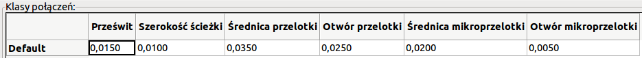
Kliknij na zak³adkê Regu³y globalne i ustaw Minimalna szeroko¶æ ¶cie¿ki na 0.01. Kliknij OK by zatwierdziæ swoje zmiany i zamknij okno Edytor regu³ projektowych.
Teraz zaimportujemy listê sieci. Kliknij w ikonê Wczytaj listê sieci na górnym pasku narzêdzi. Kliknij na przycisk Przegl±daj pliki list sieci, wybierz tute1.net w oknie dialogowym z wyborem pliku, i kliknij na Wczytaj bie¿±c± listê sieci. Nastêpnie kliknij przycisk Zamknij.
Wszystkie komponenty powinny byæ teraz widoczne w górnym, lewym rogu tu¿ ponad ramk± z obrysem strony. Przesuñ widok je¶li ich nie widzisz.
Wybierz wszystkie komponenty za pomoc± myszy i przesuñ je na ¶rodek p³ytki. Je¶li bêdzie to konieczne mo¿esz powiêkszaæ lub pomniejszaæ widok podczas przesuwania komponentów.
Wszystkie komponenty s± po³±czone za pomoc± tak zwanych nitek pomocniczych (zwanych ratsnest). Upewnij siê jednak czy przycisk Ukryj po³±czenia wspomagaj±ce  jest wci¶niêty. Tylko w ten sposób mo¿esz zobaczyæ nitki pomocnicze ³±cz±ce wszystkie komponenty.
jest wci¶niêty. Tylko w ten sposób mo¿esz zobaczyæ nitki pomocnicze ³±cz±ce wszystkie komponenty.
UWAGA: Przyciski te s± odwrotne; wciskaj±c ten przycisk wy¶wietlasz nitki pomocnicze.
Mo¿esz przesuwaæ ka¿dy komponent naje¿d¿aj±c na niego i wciskaj±c klawisz G. Kliknij w miejscu gdzie chcesz go umie¶ciæ. Przesuwaj komponenty wokó³ do czasu, a¿ zminimalizujesz krzy¿uj±ce siê po³±czenia.
UWAGA: Je¶li zamiast przeci±gania komponentów (za pomoc± klawisza G) przesuniesz je u¿ywaj±c klawisza M zauwa¿ysz pó¼niej, ¿e utracisz po³±czenia ze ¶cie¿kami (to samo wystêpuje w edytorze schematów). Dlatego te¿, zawsze u¿ywaj opcji ukrytej pod klawiszem G.
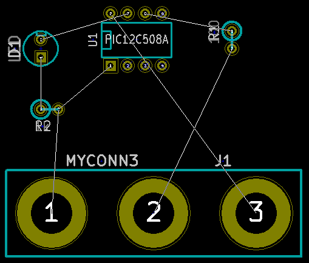
Je¶li nitki znikn± lub obraz zostanie za¶miecony, kliknij prawym klawiszem i wybierz Od¶wie¿ widok. Zauwa¿, w jaki sposób jeden z pinów rezystora 100R jest po³±czony z pinem 6 uk³adu PIC. Jest to rezultat u¿ytej metody ze stosowaniem etykiet. Etykiety s± czêsto preferowan± metod± ³±czenia, poniewa¿ ich stosowanie powoduje lepsz± czytelno¶æ schematu.
Teraz zdefiniujemy krawêd¼ naszego PCB. Wybierz warstwê Edge.Cuts z rozwijanej listy na górnym pasku narzêdzi. Kliknij w ikonê Dodaj liniê lub wielok±t (grafika) na prawym pasku narzêdzi. Narysuj prostok±t z³o¿ony z linii wokó³ rozmieszczonych elementów, klikaj±c po kolei w ka¿dym z naro¿ników, pamiêtaj±c o zachowaniu ma³ej przerwy pomiêdzy zielonymi elementami na rysunku a rysowanym w³a¶nie obrysem PCB.
Nastêpnym krokiem jaki zrobimy bêdzie wytrasowanie wszystkich po³±czeñ za wyj±tkiem GND. W rzeczywisto¶ci, po³±czymy sieæ GND u¿ywaj±c do tego celu pola miedzi umieszczonego na dolnej warstwie miedzi naszej p³ytki.
Teraz musimy wybraæ na jakiej warstwie bêdziemy operowaæ. Wybierz Front.Cu z rozwijanej listy na górnym pasku narzêdzi. Jest to górna warstwa miedzi p³ytki, tzn. ta na której normalnie s± elementy.
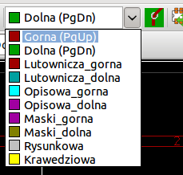
Je¶li zdecydujesz, na przyk³ad, by pracowaæ na 4 warstwach PCB, id¼ do Regu³y projektowe → Opcje warstw i zmieñ Warstwy ¶cie¿ek na 4. W tabeli Warstwy mo¿esz nazwaæ warstwy oraz zdecydowaæ do czego bêd± one u¿ywane. Zwróæ uwagê, ¿e masz tak¿e dostêp do predefiniowanych konfiguracji warstw, wybieranych z menu Domy¶lne ustawienia warstw.
Kliknij na ikonê Dodaj ¶cie¿ki i przelotki na prawym pasku narzêdzi. Kliknij na pin 1 J1 i prowad¼ ¶cie¿kê do padu R2. Kliknij podwójnie w miejscu gdzie chcesz zakoñczyæ ¶cie¿kê. Szeroko¶ci± domy¶ln± ¶cie¿ki bêdzie 0.203 mm. Mo¿esz zmieniæ szeroko¶æ ¶cie¿ki z rozwijanej listy na górnym pasku narzêdzi. Pamiêtaj jednak, ¿e aktualnie masz tylko jedn± dostêpn± szeroko¶æ ¶cie¿ki:
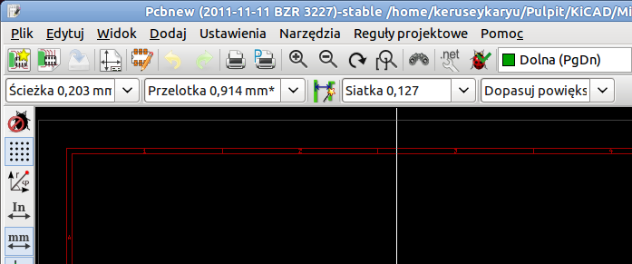
Je¶li chcia³by¶ dodaæ wiêcej dostêpnych szeroko¶ci ¶cie¿ek, przejd¼ do zak³adki: Regu³y projektowe → Regu³y projektowe → Regu³y globalne i w dolnej, prawej czê¶ci tego okna dodaj inne szeroko¶ci ¶cie¿ek jakie chcia³by¶ by by³y dostêpne. Mo¿esz potem wybraæ te szeroko¶ci ¶cie¿ek z rozwijanej listy podczas trasowania ¶cie¿ek. Zobacz przyk³ad umieszczony poni¿ej.
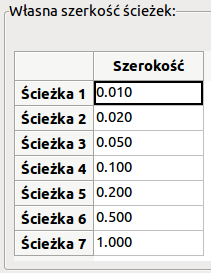
Alternatywnie, mo¿esz dodaæ Klasê Po³±czeñ, dla której definiujesz odrêbny zestaw opcji. Id¼ do Regu³y projektowe → Regu³y projektowe → Edytor klas po³±czeñ i dodaj now± klasê po³±czeñ zwan± power. Zmieñ szeroko¶æ ¶cie¿ki z 8 milsów (zapisane jako 0.0080) na 24 milsy (zapisane jako 0.0240). Nastêpnie, dodaj wszystkie sieci oprócz masy do klasy power (wybierz default na lewym panelu oraz power na prawym panelu i u¿yj strza³ek).
Je¶li chcesz zmieniæ rozmiar siatki, Prawo-klik → Wybór siatki. Upewnij siê, by wybraæ odpowiedni rozmiar siatki przed trasowaniem ¶cie¿ek i ³±czeniem ich z ich pomoc±.
Rozwa¿my fakt, na przyk³ad, ¿e komponenty BGA na siatce 0.8mm maj± odleg³o¶æ pomiêdzy wyprowadzeniami 30 mils (0.8mm), zalecane jest by podczas trasowania ustawiæ rozmiar siatki na 5 milsów.
Ponów operacjê dodawania ¶cie¿ek, a¿ wszystkie po³±czenia zostan± zrealizowane, oprócz pinu numer 3 elementu J1. Twoja p³ytka powinna wygl±daæ mniej wiêcej tak jak na poni¿szym przyk³adzie.
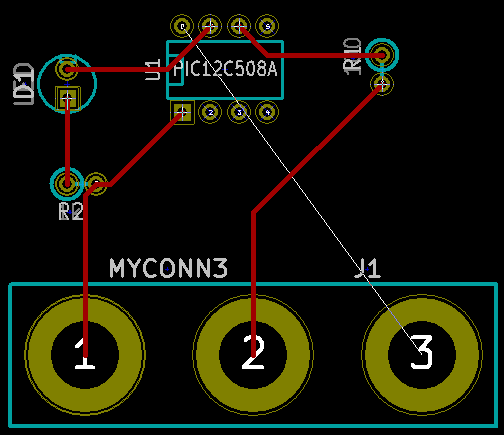
Poprowad¼my teraz ¶cie¿kê na innej warstwie miedzi. Wybierz Back.Cu na rozwijanej li¶cie na górnym pasku narzêdzi. Kliknij w ikonê Dodaj ¶cie¿ki i przelotki . Narysuj ¶cie¿kê pomiêdzy pinem numer 3 J1 a pinem 8 U1. Zauwa¿ jak zmieni³ siê kolor ¶cie¿ki. Nie jest ona w sumie konieczna, poniewa¿ po³±czenie to wykonamy za pomoc± pola miedzi, ale zrobimy j± dla przyk³adu.
Trasowanie po³±czeñ pomiêdzy pinami A i B ze zmian± warstwy. Podczas trasowania ¶cie¿ki mo¿na zmieniæ warstwê wstawiaj±c przelotkê. W czasie gdy prowadzisz ¶cie¿kê na górnej warstwie miedzi, kliknij prawym klawiszem i wybierz Dodaj przelotkê lub po prostu naci¶nij klawisz V. To spowoduje przeniesienie dalszych segmentów na warstwê doln± gdzie ¶cie¿ka zostanie dokoñczona.
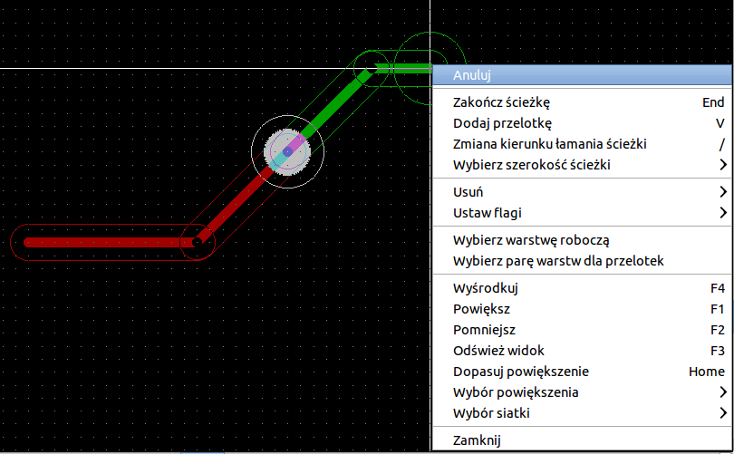
Je¶li chcia³by¶ sprawdziæ jak przebiega wybrane po³±czenie mo¿esz klikn±æ w ikonê Pod¶wietl sieæ na prawym panelu narzêdzi. Kliknij na pin 3 elementu J1. Sama ¶cie¿ka jak i wszystkie pola lutownicze do niej pod³±czone powinny zostaæ pod¶wietlone.
Teraz stworzymy pole masy, które po³±czymy ze wszystkimi pinami GND. Kliknij w ikonê Dodaj strefy na prawym pasku narzêdzi. Bêdziemy trasowaæ prostok±t wokó³ p³ytki, wiêc kliknij tam, gdzie chcesz umie¶ciæ jeden z naro¿ników. W oknie dialogowym jakie siê pojawi, ustaw Sposób ³±czenia padów na Po³±czenie termiczne i Opcje wype³niania na Tylko poziomo, pionowo i 45 stopni, i kliknij OK.
Narysuj obrys strefy klikaj±c w ka¿dym z miejsc gdzie ma znale¼æ siê kolejny naro¿nik. Kliknij podwójnie by zakoñczyæ rysunek. Kliknij prawym klawiszem wewn±trz obszaru jaki w³a¶nie narysowa³e¶. Kliknij w Wype³nij lub ponownie wype³nij wszystkie sterfy. P³ytka powinna zostaæ wype³niona zielonym polem i powinna wygl±daæ mniej wiêcej tak:
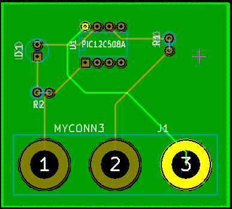
Uruchom narzêdzie do sprawdzania regu³ projektowych klikaj±c w ikonê Kontrola regu³ projektowych PCB na górnym pasku narzêdzi. Kliknij na Uruchom DRC. Nie powinno byæ ¿adnych b³êdów. Kliknij na Lista niepo³±czonych. Nie powinno byæ ¿adnych niepo³±czonych ¶cie¿ek. Kliknij OK by zamkn±æ okno dialogowe DRC.
Zapisz swój plik PCB klikaj±c na Plik → Zapisz. By zobaczyæ swoj± p³ytkê w 3D, kliknij na Widok → Widok 3D.
Mo¿esz przeci±gn±æ mysz± wokó³ by obracaæ p³ytk±.
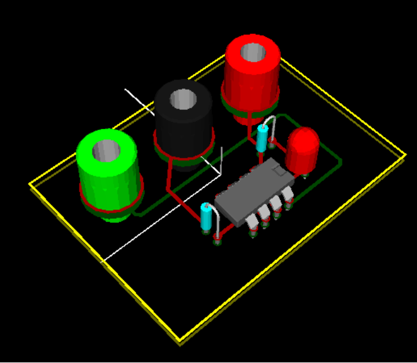
Twoja p³ytka jest ju¿ kompletna. By wys³aæ j± do producenta bêdziesz musia³ wygenerowaæ pliki Gerber.
Generowanie plików Gerber
Je¶li twoje PCB jest kompletne, mo¿esz wygenerowaæ pliki Gerber dla ka¿dej z warstw p³ytki i wys³aæ je do wybranego producenta PCB, który na ich podstawie stworzy dla ciebie fizyczn± p³ytkê drukowan±.
Za pomoc± mened¿era, otwórz program Pcbnew i za³aduj swoj± p³ytkê klikaj±c w ikonê .
Kliknij na Plik → Rysuj. Wybierz Gerber jako Format wyj¶ciowy oraz wybierz folder, do którego trafi± wszystkie pliki Gerber.
To s± warstwy jakie potrzebujesz do wykonania typowej p³ytki dwustronnej:
Nazwa warstwy w KiCad Co to jest Rozszerzenie pliku Gerber
Dolna Bottom Layer .GBL
Gorna Top Layer .GTL
Pasty_gorna Top Paste .GTP
Opisowa_gorna Top Overlay .GTO
Maski_dolna Bottom Solder Resist .GBS
Maski_gorna Top Solder Resist .GTS
Krawedziowa Edges Nie dostêpneKontynuuj klikaj±c na klawisz Rysuj. By przejrzeæ wszystkie pliki Gerber wróæ do mened¿era i kliknij w ikonê GerbView. Z listy rozwijanej wybierz Warstwa 1. Kliknij na Plik → Wczytaj plik Gerber lub kliknij w ikonê . Za³aduj po kolei wszystkie pliki Gerber. Zwróæ uwagê w jaki sposób s± one wy¶wietlane jedna na drugiej.
U¿yj poleceñ z menu lub prawego panelu warstw by zaznaczyæ/odznaczyæ wy¶wietlanie kolejnych warstw. Dok³adnie sprawd¼ ka¿d± z warstw przed wys³aniem plików do produkcji.
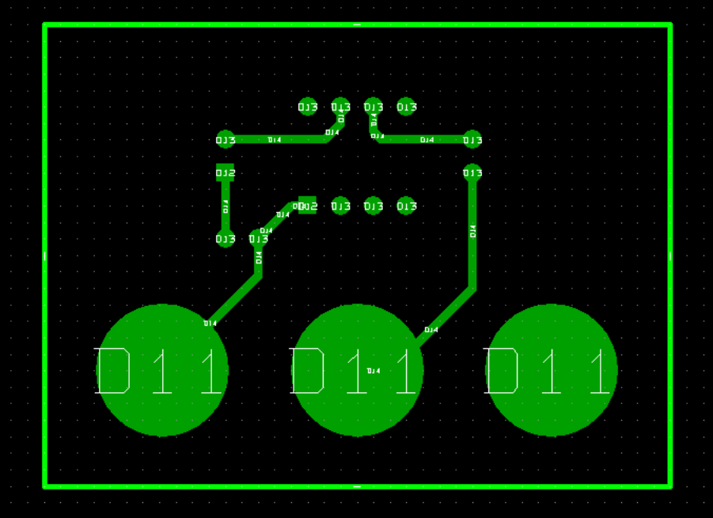
By wygenerowaæ plik wierceñ, z Pcbnew wybierz ponownie opcjê Plik → Rysuj. Domy¶lne ustawienia powinny byæ dobre.
Automatyczne prowadzenie ¶cie¿ek z wykorzystaniem FreeRouter-a
Trasowanie p³ytek rêcznie jest szybkie i dostarcza wiele rado¶ci, jednak w przypadku p³ytek zawieraj±cych sporo elementów, mo¿esz zechcieæ u¿yæ autoroutera. Pamiêtaj jednak, ¿e przedtem powiniene¶ wytrasowaæ krytyczne ¶cie¿ki rêcznie, a potem ustawiæ autorouter tak, by zaj±³ siê tymi trudniejszymi. Jego praca powinna byæ ograniczona tylko do niezrealizowanych ¶cie¿ek. Autorouter jaki tu u¿yjemy to FreeRouter ze strony freerouting.net.
Z Pcbnew kliknij w Plik → Eksportuj → Specctra DNS oraz zapisz lokalnie plik .dsn. Nastêpnie, kliknij w Narzêdzia → FreeRoute. Otworzy siê menu z kilkoma opcjami do wyboru, kliknij na klawisz Uruchom FreeRouter przez Java Web Start. Poczekaj kilka sekund (musisz mieæ po³±czenie z sieci± Internet) a zostanie otwarte g³ówne okno FreeRouter. Kliknij w Open Your Own Design, wybierz plik .dsn oraz za³aduj go.
FreeRouter posiada pewne cechy których KiCad w tej chwili nie posiada, oba przy manualnym i automatycznym trasowaniu ¶cie¿ek. FreeRouter dzia³a za pomoc± dwóch g³ównych kroków: pierwszy, trasuje on ¶cie¿ki na p³ytce first, a nastêpnie je optymalizuje. Pe³na optymalizacja mo¿e zabraæ sporo czasu, jednak mo¿esz j± zatrzymaæ w ka¿dej chwili.
Mo¿esz rozpocz±æ automatyczne trasowanie ¶cie¿ek klikaj±c na przycisk Autorouter na górnym pasku. Dolny pasek przedstawia informacje o przebiegu trasowania. Je¶li licznik Pass zbli¿y siê do warto¶ci 30, twoja p³ytka prawdopodobnie nie mo¿e zostaæ wytrasowana z pomoc± tego routera. Rozszerz nieco przestrzeñ pomiêdzy komponentami lub obróæ niektóre z nich i spróbuj ponownie. Celem rotacji i zmiany pozycji elementów jest zmniejszenie ilo¶ci krzy¿uj±cych siê po³±czeñ.
Klikniêcie lewym klawiszem myszy zatrzymuje proces automatycznego trasowania i automatycznie rozpoczyna proces optymalizacji po³±czeñ. Ponowne klikniêcie zatrzyma proces optymalizacji. Je¶li naprawdê nie masz zamiaru przerwaæ jednego z tych dwóch procesów, lepiej zaczekaj aby FreeRouter zakoñczy³ swoj± pracê.
Kliknij na File → Export Specctra Session File oraz zapisz plik p³ytki z rozszerzeniem *.ses. Nie bêdzie trzeba zapisywaæ pliku regu³ FreeRouter.
Wróæ do Pcbnew. Mo¿esz zaimportowaæ ¶wie¿o wytrasowan± p³ytkê klikaj±c w link Narzêdzia → FreeRoute a nastêpnie w ikonê Importuj plik Spectra Session (*.ses) by wybraæ twój plik .ses.
Je¶li istniej± ¶cie¿ki, których prowadzenie ci siê nie podoba, mo¿esz je skasowaæ i wytrasowaæ ponownie, u¿ywaj±c klawisza Del i narzêdzia do trasowania ¶cie¿ek, które jest dostêpne przez ikonê Dodaj ¶cie¿ki i przelotki na prawym pasku narzêdzi.
5. Tworzenie symboli w programie KiCad
Czasem komponent jaki chcia³by¶ wstawiæ do schematu nie znajduje siê w standardowych bibliotekach programu KiCad. Jest to normalne i nie powinno to byæ powodem zmartwieñ. W tej sekcji zobaczysz w jaki sposób mo¿na szybko taki komponent stworzyæ korzystaj±c z narzêdzi programu KiCad. Pamiêtaj te¿, ¿e mo¿esz zawsze znale¼æ komponenty przeznaczone dla programu KiCad w sieci Intenet. Na przyk³ad korzystaj±c z tej witryny:
http://per.launay.free.fr/kicad/kicad_php/composant.php
W programie KiCad, komponent to fragment tekstu zawarty pomiêdzy znacznikami DEF i ENDDEF. Pojedyncze komponenty lub ich wiêksza ilo¶æ normalnie s± umieszczane w bibliotekach, które s± plikami z rozszerzeniem .lib. Je¶li chcesz dodaæ komponenty do pliku biblioteki, mo¿esz te¿ u¿yæ metody kopiuj-wklej.
Mo¿emy u¿yæ Edytora bibliotek (cze¶æ programu Eeschema) do tworzenia nowych komponentów. W naszym folderze projektu tute1 stwórzmy folder nazwany library. Wewn±trz niego umie¶cimy nasz nowy plik biblioteki myLib.lib jak stworzymy nasz nowy komponent.
Teraz mo¿emy rozpocz±æ proces tworzenia naszego nowego komponentu. Z mened¿era projektu uruchom program Eeschema, kliknij w ikonê Edytor bibliotek a nastêpnie kliknij w ikonê Utwórz nowy symbol w otwartym oknie. Pojawi siê okno W³a¶ciwo¶ci symbolu. Nazwij nowy komponent jako MYCONN3, ustaw Domy¶lne oznaczenie na J, oraz Liczba czê¶ci w paczce na 1. Kliknij OK. Je¶li pojawi siê okno ostrze¿enia kliknij na Tak.
W tym momencie, komponent zosta³ stworzony ale posiada tylko swoje etykiety. Dodajmy mu jakie¶ wyprowadzenia. Kliknij w ikonê Dodaj wyprowadzenia do symbolu na prawym pasku narzêdzi. By umie¶ciæ pin w polu roboczym, kliknij lewym klawiszem myszy gdzie¶ w centrum, poni¿ej etykiety MYCONN3.
W oknie W³a¶ciwo¶ci pinu jakie siê pojawi, ustaw nazwê pinu jako VCC, ustaw numer pinu na 1, oraz Typ elektryczny na Wyj¶cie zasilania, nastêpnie kliknij OK.
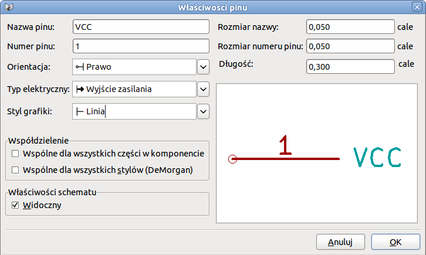
Umie¶æ pin klikaj±c w miejscu gdzie chcia³by¶ aby siê pojawi³, mniej wiêcej na prawo pod etykiet± MYCONN3.
Powtórz kroki z tworzeniem pinu ponownie, tym razem wpisuj±c w pole Nazwa pinu nazwê INPUT, Numer pinu na 2, a Typ elektryczny na Wej¶cie.
Powtórz ostatni raz kroki z tworzeniem pinu, tym razem wype³niaj±c pola Nazwa pinu jako GND, Numer pinu na 3, a Typ elektryczny jako Wyj¶cie zasilania. Ustaw piny tak by by³y jeden nad drugim. Etykieta MYCONN3 powinna znale¼æ siê w centrum (gdzie krzy¿uj± siê dwie niebieskie linie).
Nastêpnie, narysuj kontur symbolu. Kliknij w ikonê Dodaj prostok±t (grafika) . Chcieliby¶my by zosta³ narysowany kwadrat obok pinów, tak jak pokazuje to rysunek. By to zrobiæ, kliknij w miejscu gdzie chcia³by¶ umie¶ciæ lewy, górny naro¿nik. Kliknij ponownie w miejscu gdzie chcia³by¶ umie¶ciæ prawy dolny naro¿nik.
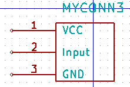
Zapiszmy komponent w naszej bibliotece myLib.lib. Kliknij w ikonê Zapisz bie¿±cy symbol w nowej bibliotece , przejd¼ do folderu tute1/library/ i zapisz nowy plik biblioteki pod nazw± myLib.lib.
Id¼ do Ustawienia → Biblioteka i dodaj zarówno tute1/library/ w Bie¿±ca lista przegl±danych ¶cie¿ek i myLib.lib w Pliki bibliotek symboli.
Kliknij w ikonê Wybierz bibliotekê robocz±  . W oknie Wybór biblioteki kliknij na
. W oknie Wybór biblioteki kliknij na myLib i kliknij OK. Zauwa¿, ¿e nag³ówek okna wskazuje jaka biblioteka jest aktualnie w u¿yciu, powinien on teraz zawieraæ myLib.
Kliknij w ikonê Zaktualizuj symbol w bie¿±cej bibliotece 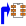 na górnym pasku narzêdzi. Zapisz wszystkie zmiany klikaj±c w ikonê Zapisz bie¿±c± bibliotekê na dysk na górnym pasku narzêdzi. Kliknij na Tak w oknie z komunikatem potwierdzenia jakie siê pojawi. Nowy symbol jest zrobiony i dostêpny w bibliotece, której nazwê wskazuje pasek tytu³owy.
Mo¿esz teraz zamkn±æ okno Edytora bibliotek. Tym samym wrócisz do okna edytora schematu. Nowy komponent bêdzie dostêpny dla ciebie w bibliotece myLib.
Mo¿esz udostêpniæ dla danego projektu ka¿dy plik biblioteki, np. file.lib dodaj±c go do przegl±danych ¶cie¿ek. Z poziomu Eeschema, id¼ do Ustawienia → Biblioteka i dodaj zarówno ¶cie¿kê do niego w Bie¿±ca lista przegl±danych ¶cie¿ek, jak i sam plik file.lib w Plik bibliotek symboli.
Eksportowanie, importowanie oraz modyfikacje sk³adników bibliotek
Zamiast tworzyæ symbol w bibliotece od zera, czasem ³atwiej jest zacz±æ od istniej±cego symbolu, modyfikuj±c go. W tej sekcji zobaczymy jak wyeksportowaæ komponent z standardowej biblioteki device do naszej w³asnej biblioteki myOwnLib.lib a nastêpnie go zmodyfikujemy.
Z mened¿era uruchom Eeschema, kliknij w ikonê Edytor bibliotek , kliknij w ikonê Wybierz bibliotekê robocz± oraz wybierz bibliotekê device. Kliknij w ikonê Wczytaj symbol z bie¿±cej biblioteki w celu edycji i zaimportuj symbol RELAY_2RT.
Kliknij w ikonê Eksportuj symbol , przejd¼ do folderu library/ oraz zapisz now± bibliotekê pod nazw± myOwnLib.lib.
Mo¿esz dodaæ ten komponent jak i bibliotekê do dostêpnych bibliotek. Z poziomu Eeschema, id¼ do Ustawienia → Biblioteka i dodaj zarówno ¶cie¿kê do library/ w Bie¿±ca lista przegl±danych ¶cie¿ek oraz myOwnLib.lib w Plik bibliotek symboli.
Kliknij w ikonê Wybierz bibliotekê robocz± . W oknie Wybór biblioteki kliknij na myOwnLib oraz na OK. Zauwa¿, ¿e pasek tytu³owy okna zmieni³ siê i wskazuje na aktywn± bibliotekê myOwnLib.
Kliknij w ikonê Wczytaj symbol z bie¿±cej biblioteki w celu edycji i zaimportuj RELAY_2RT.
Mo¿esz teraz zmodyfikowaæ ten symbol jak chcesz. Najed¼ na etykietê RELAY_2RT, wci¶nij klawisz E i zmieñ nazwê na MY_RELAY_2RT.
Kliknij w ikonê Zaktualizuj symbol w bie¿±cej bibliotece na górnym pasku narzêdzi. Zapisz wszystkie zmiany klikaj±c w ikonê Zapisz bie¿±c± bibliotekê na dysk na górnym pasku narzêdzi.
6. Tworzenie symboli za pomoc± quicklib
Ten rozdzia³ prezentuje alternatywny sposób tworzenia komponentu MYCONN3 u¿ywaj±c do tego celu narzêdzia on-line quicklib.
Przejd¼ na stronê quicklib: http://kicad.rohrbacher.net/quicklib.php
Wype³nij formularz zgodnie z nastêpuj±cymi informacjami:
Component name: MYCONN3
Reference Prefix: J
Pin Layout Style: SIL
Pin Count, N: 5Kliknij w ikonê Assign Pins. Wype³nij pola zgodnie z:
Pin 1: VCC
Pin 2: input
Pin 3: GNDKliknij w ikonê Preview it i, je¶li jeste¶ usatysfakcjonowany, kliknij na Build Library Component. Pobierz plik i zmieñ jego nazwê na tute1/library/myLib.lib. To wszystko!
Zobacz jak wygl±da symbol w programie KiCad. Z mened¿era projektu uruchom Eeschema, kliknij w ikonê Edytor bibliotek , kliknij w ikonê Importuj symbol , przejd¼ do tute1/library/ i wybierz myLib.lib.
Mo¿esz dodaæ ten komponent jak i bibliotekê do dostêpnych bibliotek. Z poziomu Eeschema, id¼ do Ustawienia → Biblioteka i dodaj zarówno ¶cie¿kê do library/ w Bie¿±ca lista przegl±danych ¶cie¿ek oraz myOwnLib.lib w Plik bibliotek symboli.
Jak pewnie zgad³e¶, ta metoda tworzenia symboli bibliotecznych mo¿e byæ bardzo efektywna, przy tworzeniu symboli, które zawieraj± w sobie du¿± ilo¶æ wyprowadzeñ. Ale jest te¿ inny sposób.
Tworzenie symboli z du¿± ilo¶ci± wyprowadzeñ
W sekcji zwanej Tworzenie symboli za pomoc± quicklib poznali¶my jak tworzyæ symbole u¿ywaj±c do tego celu narzêdzia quicklib opartego o stronê Web. Jednak, czasami mo¿esz do¶wiadczyæ sytuacji, ¿e bêdziesz potrzebowa³ symbolu, który zawiera³ bêdzie du¿± ilo¶æ wyprowadzeñ (np. parêset wyprowadzeñ). W programie KiCad nie jest to a¿ tak skomplikowane zadanie.
Przypu¶æmy, ¿e chcia³by¶ utworzyæ symbol, który posiada³ bêdzie 50 wyprowadzeñ. Praktycznie stosowan± metod± jest podzielenie takiego elementu na mniejsze czê¶ci, dla przyk³adu na dwie zawieraj±ce po 25 wyprowadzeñ. Taka reprezentacja symbolu pozwala na ³atwiejsze ³±czenie wyprowadzeñ.
Najlepszym sposobem jest u¿ycie quicklib gdzie wygenerujemy dwa symbole po 25 pinów w ka¿dym, i zmienimy numeracjê pinów za pomoc± skryptu jêzyka Python i na koniec po³±czymy te dwa symbole w jeden korzystaj±c z metody kopiuj-wklej w jeden komponent zawarty pomiêdzy DEF a ENDDEF.
Przyk³ad takiego prostego skryptu jêzyka Python znajdziesz poni¿ej. Mo¿e on byæ u¿yty w po³±czeniu z plikami in.txt oraz out.txt gdzie zamienimy linie zawieraj±ce:
'X PIN1 1 -750 600 300 R 50 50 1 1 I' na 'X PIN26 26 -750 600 300 R 50 50 1 1 I'Bêdzie to wykonane dla wszystkich linii z pliku in.txt.
#!/usr/bin/env python
''' simple script to manipulate kicad component pins numbering'''
import sys, re
try:
fin=open(sys.argv[1],'r')
fout=open(sys.argv[2],'w')
except:
print "oh, wrong use of this app, try:", sys.argv[0], "in.txt out.txt"
sys.exit()
for ln in fin.readlines():
obj=re.search("(X PIN)(\d*)(\s)(\d*)(\s.*)",ln)
if obj:
num = int(obj.group(2))+25
ln=obj.group(1) + str(num) + obj.group(3) + str(num) + obj.group(5) +'\n'
fout.write(ln)
fin.close(); fout.close()
#
# for more info about regular expression syntax and kicad component generation:
# http://gskinner.com/RegExr/
# http://kicad.rohrbacher.net/quicklib.phpPodczas ³±czenia dwóch symboli w jeden, bêdzie konieczne u¿ycie Edytora Bibliotek programu Eeschema by przenie¶æ pierwszy symbol, tak aby drugi z symboli go nie przykry³. Poni¿ej mo¿esz zobaczyæ finalny plik .lib i jego reprezentacjê w Eeschema.
EESchema-LIBRARY Version 2.3 |
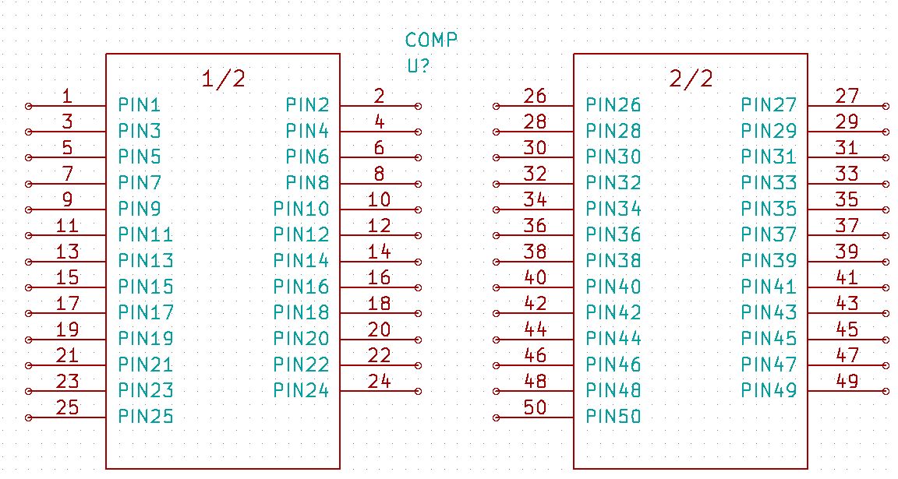 |
Skrypt jêzyka Python zaprezentowany tutaj jest bardzo potê¿nym narzêdziem przy manipulacji numeracj± wyprowadzeñ i ich opisów. Pamiêtaj jednak, ¿e ca³a moc tego skryptu tkwi tylko w czê¶ci operuj±cej na Wyra¿eniach Regularnych: http://gskinner.com/RegExr/
7. Tworzenie footprint-ów
W przeciwieñstwie do innych narzêdzi EDA, które posiadaj± jeden rodzaj bibliotek zawieraj±cy zarówno symbole jak i wiele przypisanych do nich footprintów; pliki .lib programu KiCad zawieraj± tylko symbole, a pliki .mod zawieraj± tylko modu³y lub footprinty. W celu powi±zania symboli i modu³ów z powodzeniem stosowany jest program CvPcb.
Zarówno pliki .lib, jak i pliki .mod to pliki tekstowe, zawieraj±ce wszystkie od jednej do kilku czê¶ci.
Istnieje obszerna biblioteka modu³ów programu KiCad, jednak od czasu do czasu mo¿e siê okazaæ, ¿e modu³ jaki potrzebujesz nie znajduje siê w bibliotekach KiCad-a. Oto krótki przewodnik procesu tworzenia nowego modu³u w programie KiCad:
Z mened¿era projektu KiCad uruchom Pcbnew. Kliknij w ikonê Otwórz edytor modu³ów na górnym pasku narzêdzi. Spowoduje to otwarcie Edytora Modu³ów.
Bêdziemy prowadziæ do tego by zapisaæ nowy footprint w bibliotece modu³ów connect. Kliknij w ikonê Wybierz bibliotekê robocz± na górnym pasku narzêdzi. Wybierz bibliotekê connect, choæ mo¿esz wybraæ te¿ inn± lokacjê je¶li chcesz.
Kliknij w ikonê Nowy modu³ na górnym pasku narzêdzi. Wpisz MYCONN3 jako Oznaczenie modu³u. W ¶rodku pola roboczego pojawi siê etykieta MYCONN3. Pod ni± mo¿esz zobaczyæ drug± etykietê VAL**. Kliknij prawym klawiszem myszy na MYCONN3 i przesuñ etykietê powy¿ej VAL**. Kliknij prawym klawiszem na VAL**, wybierz Edytuj tekst modu³u i zmieñ go na SMD. Ustaw warto¶æ Pokazuj na Niewidoczny.
Wybierz ikonê Dodaj pola lutownicze na prawym pasku narzêdzi. Kliknij w obszarze roboczym by umie¶ciæ tam pole lutownicze. Kliknij prawym klawiszem na nowym polu i kliknij Edytuj pole. Mo¿esz te¿ u¿yæ klawisza E.
Ustaw Numer pola na 1, Kszta³t pola na Prostok±t, Typ pola na SMD, Rozmiar X na 0.4, oraz Rozmiar Y na 0.8. Kliknij OK. Kliknij na Dodaj pola lutownicze ponownie i wstaw jeszcze dwa pola lutownicze.
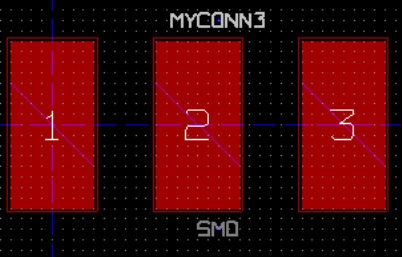
Je¶li chcesz zmieniæ gêsto¶æ siatki, Prawo-klik → Wybór siatki. Upewnij siê, ¿e wybra³e¶ odpowiedni± gêsto¶æ siatki przed tworzeniem dalszych elementów modu³u.
Rozwa¿my fakt, na przyk³ad, ¿e komponenty BGA na siatce 0.8mm maj± odleg³o¶æ pomiêdzy wyprowadzeniami 30 mils (0.8mm), zalecane jest by podczas trasowania ustawiæ rozmiar siatki na 5 milsów.
Przesuñ etykietê MYCONN3 oraz SMD poza pola lutownicze, tak aby znalaz³y mniej wiêcej w miejscach pokazanych na nastêpnym obrazku.
Gdy wstawiamy pola lutownicze czêsto jest konieczne korzystanie z pomiaru odleg³o¶ci wzglêdnej. Umie¶æ kursor gdzie chcia³by¶ umie¶ciæ punkt pocz±tkowy (0, 0) wzglêdnego uk³adu wspó³rzêdnych i naci¶nij klawisz Spacja. Je¶li poruszasz mysz±, zauwa¿ysz, ¿e wspó³rzêdne relatywne pokazywane na pasku statusu bêd± odnosiæ siê do ustalonego teraz punktu zerowego. Mo¿esz przenosiæ ten punkt zerowy za ka¿dym razem jak bêdziesz potrzebowa³ okre¶liæ dystans od jakiego¶ wybranego punktu.
Teraz dodamy obrys modu³u. Kliknij w ikonê Dodaj liniê lub wielok±t (grafika) na prawym pasku narzêdzi. Narysuj obrys wokó³ pól lutowniczych.
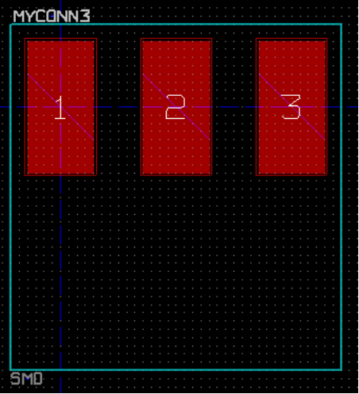
Kliknij w ikonê Zapisz modu³ w aktywnej bibliotece na górnym pasku narzêdzi i u¿yj domy¶lnej nazwy MYCONN3.
8. Uwagi na temat przenoszenia plików projektów wykonanych w programie KiCad
Jakie pliki musisz wys³aæ do kogo¶, by móg³ on w pe³ni za³adowaæ i u¿yæ twojego projektu?
Je¶li bêdziesz musia³ siê z kim¶ podzieliæ swoim projektem, wa¿ne jest by plik ze schematem .sch, plik z p³ytk± .brd, plik projektu .pro oraz plik z list± sieci .net, wys³aæ razem z bibliotekami symboli .lib oraz bibliotekami modu³ów .mod. Tylko w ten sposób inne osoby bêd± mia³y woln± rêkê w modyfikacji schematu lub obwodu drukowanego.
Dla schematu, bêd± potrzebne pliki bibliotek .lib które zawieraj± w sobie definicje symboli. Te biblioteki musz± zostaæ za³adowane poprzez odpowiednie ustawienia w programie Eeschema. Z drugiej strony, modu³y (footpriny) mog± byæ zapisane w plikach PCB (pliki .brd). Mo¿esz wys³aæ komu¶ plik .brd i nic poza tym, a on dalej bêdzie mia³ mo¿liwo¶æ ogl±dania lub edycji p³ytki. Jednak, je¶li chcia³by on za³adowaæ modu³y z listy sieci, biblioteki modu³ów (pliki .mod) musz± byæ obecne i poprawnie za³adowane przez ustawienia programu Pcbnew, tak jak w przypadku schematu. Niezbêdne s± one tak¿e przy przypisywaniu symbolom modu³ów za pomoc± programu CvPcb.
Je¶li kto¶ prze¶le ci plik .brd z modu³ami które chcia³by¶ u¿yæ na innej p³ytce, mo¿esz otworzyæ edytor modu³ów, za³adowaæ modu³ z bie¿±cej p³ytki, oraz zapisaæ lub wyeksportowaæ go do innej biblioteki. Mo¿esz tak¿e wyeksportowaæ wszystkie modu³y z pliku .brd za jednym razem, stosuj±c polecenie Pcbnew Plik → Archiwizuj obudowy → Utwórz archiwum obudów, które tworzy nowy plik biblioteki .mod z wszystkimi modu³ami jakie znajduj± siê na p³ytce.
Na koniec, je¶li PCB jest tylko jedn± rzecz± jak± chcesz przekazaæ, to sam plik .brd jest wystarczaj±cy. Jednak, je¶li chcesz daæ komu¶ mo¿liwo¶æ u¿ywania i modyfikowania twojego schematu, jego komponentów i PCB, jest wysoce zalecane by zarchiwizowaæ i wys³aæ nastêpuj±ce pliki (przyk³adowo) razem ze struktur± katalogów:
foxy_board/
+-- foxy_board.pro
+-- foxy_board.sch
+-- foxy_board.brd
+-- foxy_board.net
+-- lib
| +-- foxy_board.lib
| +-- foxy_board.mod
+-- gerber
+-- ...
+-- ...9. Renumeracja elementów w programie KiCad
Po skompletowaniu ju¿ schematu elektronicznego, przypisaniu footprintów, wytrasowaniu ¶cie¿ek i wygenerowaniu plików Gerber, jeste¶ gotów, by wys³aæ wszystko do producenta PCB tak, aby p³ytka mog³a staæ siê rzeczywisto¶ci±.
Czêsto ta liniowo¶æ procesu pracy nad p³ytk± okazuje siê nie byæ taka jednokierunkowa. Na przyk³ad, gdy musisz zmodyfikowaæ/rozszerzyæ p³ytkê, dla której ty lub inne osoby ju¿ wykona³y ca³y proces projektowy, mo¿e zaj¶æ potrzeba przeniesienia niektórych elementów, zast±piæ je innymi, dokonaæ zmiany footprintów lub jeszcze innych poprawek. Podczas procesu modyfikacji z pewno¶ci± nie chcia³by¶ ponownie trasowaæ ca³ej p³ytki od pocz±tku. Zamiast tego, powiniene¶ zrobiæ to w ten sposób:
Przypu¶æmy, ¿e hipotetycznie chcesz zamieniæ z³±cze CON1 przez CON2.
Masz ju¿ w pe³ni stworzony schemat jak i p³ytkê.
Z mened¿era projektu KiCad, uruchom Eeschema, dokonaj swoich modyfikacji usuwaj±c z³±cze CON1 i dodaj±c CON2. Zapisz swój projekt schematu z pomoc± ikony i kliknij w ikonê Utwórz listê sieci na górnym pasku narzêdzi.
Kliknij na Lista sieci nastêpnie na Zapisz. Zapisz pod domy¶ln± nazw±, nadpisuj±c star± listê sieci.
Teraz przypiszemy modu³ dla CON2. Kliknij w ikonê Uruchom CvPcb na górnym pasku narzêdzi. Przypisz footprint do nowego elementu CON2. Reszta komponentów nadal posiada poprzednio im przypisane footprinty. Zamknij CvPcb.
Wróæ do edytora schematów, zapisz projekt klikaj±c na Plik → Zapisz ca³y projekt schematu. Zamknij edytor schematów.
Z mened¿era projektu, kliknij w ikonê Pcbnew. Otworzy siê okno Pcbnew.
Stara, ju¿ wytrasowana p³ytka powinna siê otworzyæ automatycznie. Zaimportujmy now± listê sieci. Kliknij na Wczytaj listê sieci na górnym pasku narzêdzi.
Kliknij na klawisz Przegl±daj listy sieci, wybierz plik z list± sieci w oknie dialogowym wyboru pliku oraz kliknij na Wczytaj bie¿±c± listê sieci. Nastêpnie kliknij klawisz Zamknij.
W tym punkcie powiniene¶ ju¿ zobaczyæ obwód drukowany z poprzednio wytyczonymi ¶cie¿kami. W lewym górnym rogu powiniene¶ zobaczyæ wszystkie komponenty jakie nie zosta³y jak dot±d w pe³ni umieszczone na p³ytce, w twoim przypadku CON2. Wybierz CON2 za pomoc± myszy. Przesuñ komponent na ¶rodek p³ytki.
Umie¶æ CON2 we w³a¶ciwym miejscu i poci±gnij ¶cie¿ki. Po tych operacjach, zapisz projekt i wygeneruj pliki Gerber tak jak zwykle.
Proces opisany tutaj mo¿e byæ ³atwo powtórzony tyle razy, ile trzeba. Oprócz metody opisanej powy¿ej, jest równie¿ inna metoda znana jako numeracja wsteczna. Metoda ta pozwala na dokonywanie zmian w wytrasowanym ju¿ PCB w Pcbnew i przeniesienia tych zmian do schematu i plików z list± sieci. Metoda numeracji wstecznej, jednak nie jest tak u¿yteczna i dlatego nie jest tutaj opisana.
10. Wiêcej na temat dokumentacji do programu KiCad
Dokument ten, to szybki przegl±d funkcji dostêpnych w programie KiCad. W celu uzyskania szczegó³owych instrukcji nale¿y zapoznaæ siê z plikami pomocy, do których dostêp mo¿na uzyskaæ z ka¿dego modu³u KiCad EDA Suite. Klikaj±c na przyk³ad w Pomoc → Zawarto¶æ.
KiCad dostarczany jest razem z ca³kiem dobrym zestawem podrêczników w wielu jêzykach, dla wszystkich jego czterech podstawowych sk³adników.
Polskie wersjê podrêczników do programu KiCad s± równie¿ dostarczane razem z programem KiCad.
Kurs ten jest równie¿ rozpowszechniany razem z podrêcznikami programu KiCad, i zosta³ czê¶ciowo przet³umaczony tak¿e na inne jêzyki. Wersje PDF i ¼ród³a w formacie OpenDocument (.odt) tego poradnika s± dystrybuowane bezp³atnie razem z wszystkimi najnowszymi wersjami KiCad-a. Ten poradnik, jak równie¿ instrukcje mo¿na znale¼æ w nastêpuj±cych katalogach:
/usr/share/doc/kicad/pl/
/usr/share/doc/kicad/help/pl/
/usr/local/kicad/doc/tutorials/pl/
kicad/doc/tutorials/pl/
Czêsto zadawane pytania (FAQ)
Bardzo dobrym i czêsto aktualizowanym ¼ród³em informacji jest lista KiCad FAQ, dostêpna pod tym adresem w sieci:
http://kicad.sourceforge.net/wiki/index.php?title=Frequently-asked-questions